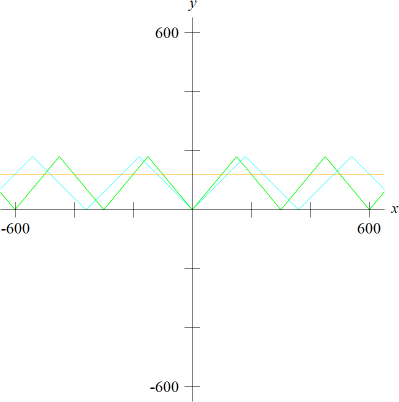

前言
今天遇到一道有趣的题目，开始以为时间是离散，于是遍历了每一秒时刻的情况，发现和答案有一定的误差。后来意识到了指针都是连续移动的，当天想了很久也没想出啥好方法，看网上的讨论给的方法也很暴力。第二天灵光一闪想出了一个不那么粗暴的的方法，在这里记录一下。
从点到线
我的思路一直是离散的，也就是“点”的思想，总想要计算某个时刻指针的位置，判断某个时刻能不能满足条件。但是在连续的情况下，这样的思路是非常耗费计算资源的，这有点像微分的思想，我可以把时间间隔缩小到0.0001秒，这样的误差可能就可以忽略不计，但肯定会超时。
另一种思路去考虑刚好满足条件的时刻，与刚好不满足条件的时刻，这个区间内的所有时间也就是满足条件的时间。由于三个指针都是匀速运动的，它们两两之间的角度差也是线性变化的，函数图像如下图所示。

当给定一个角度d时，我们希望找到三个函数图像都在y=d这条直线之上的公共部分，这些公共部分的长度之和，也就是最终的结果。计算区间的过程可以从左到右遍历所有的交点，当遇到导数为正部分的交点时，说明该函数进入了满足条件的区间，我们对一个记录值+1，遇到导数为负的交点时，我们对一个记录值-1，则说明函数离开了满足条件的区间。记录值从3变为2的那一段区间即三个函数都满足条件的区间。
源码
1 |
|